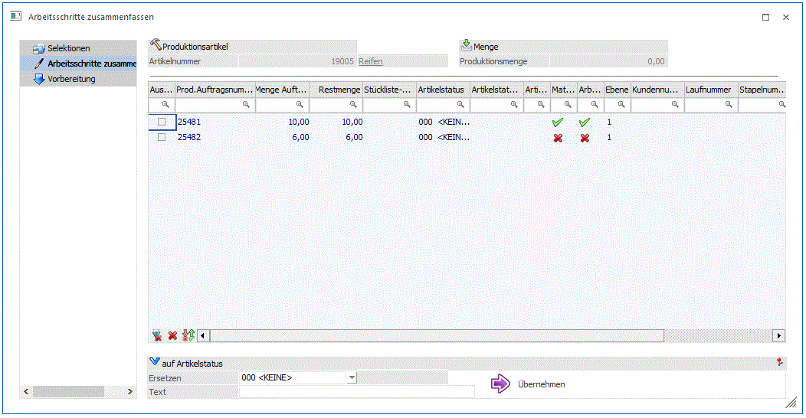

In diesem Schritt können die einzelnen Produktionsaufträge für das Zusammenfassen anhand des selektieren Arbeitsschritt in einer Tabelle ausgewählt werden.

Tabellenspalten
Ø Auswahl
Wenn diese Option bei einem Produktionsauftrag in der Tabellenzeile aktiviert ist, wird der Auftrag für das Zusammenfassen nach dem Arbeitsschritt berücksichtigt.
Die restlichen Tabellenspalten bieten Informationen zum jeweiligen Produktionsauftrag an, wonach der Tabelleninhalt sortiert werden kann.
Auf Artikelstatus
In diesem Bereich kann ein Artikelstatus selektiert werden, der auf den in der Tabelle ausgewählten Produktionsaufträge übernommen werden kann.
Ø Ersetzen
Hier kann ein bestehender Artikelstatus für die Übernahme ausgewählt werden. (Artikelstati können im Fenster "Kategorie/Artikelstatus" im Menü "Stammdaten" angelegt werden.)
Ø Text
Ein Artikelstatus-Infotext kann hier für die Übernahme eingegeben werden.
Ø Variante
Die jeweilige Variante, womit der einzelne Arbeitsschritt angelegt wurde, wird in dieser Spalte angezeigt.
Ø Variante Text
Der jeweilige Variantentext, womit der einzelne Arbeitsschritt angelegt wurde, wird in dieser Spalte angezeigt.
Ø Übernehmen
Mit diesem Button werden der selektierte Artikelstatus und Infotext bei allen selektierten Produktionsaufträgen in der Tabelle hinterlegt.
Mit einem Klick auf den OK Button oder die F5-Taste wird der selektierte Arbeitsschritt für die in der Tabelle ausgewählten Produktionsaufträge in einem neuen Produktionsauftrag zusammengefasst. Dazu wird der Arbeitsschritt im Fenster "Produktionsvorbereitung" automatisch als nächster Schritt geladen, um den neuen Produktionsauftrag anzulegen.